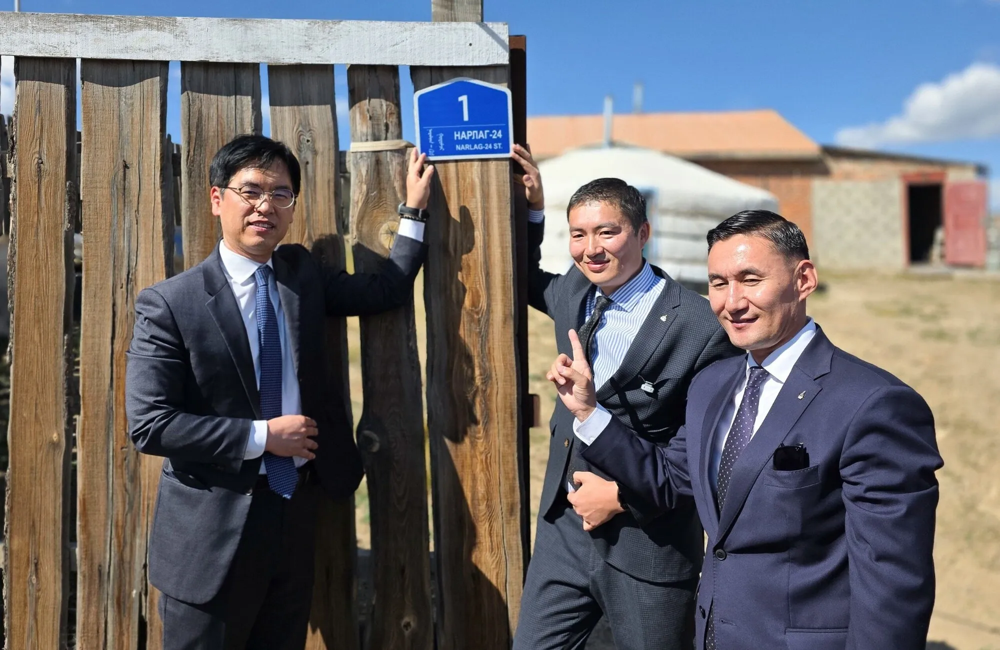
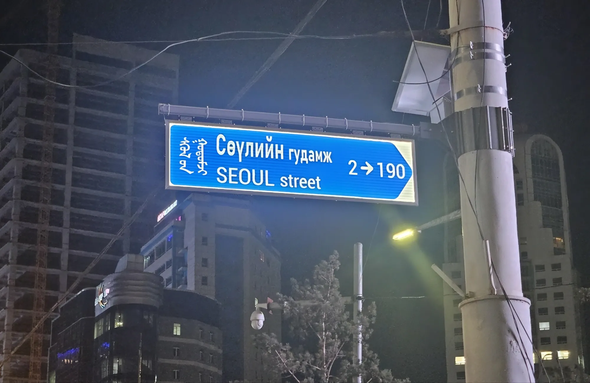

음?


음?
왼쪽에 좀 나눠주고싶네 ㅋㅋㅋㅋ
네?
에잇! 쌀농사도 전수받고 도로명 표지판제도도 전수받을 생각이냐!
몽골이 청나라지?
한때 세계정복 가능했던 나라고 로마까지 진출해서 씹어먹었던 나란데 왤케 순해졌냐...
몽골은 원나라임 ㅎㅎ
청나라는 만주족이 세운 국가
한족 만주족은 알고있는데
한족이 명
망주족이 청
근데 몽골도 한족이었구나
몽골은 한족 아니야. 너가 쓴 댓글 몽골사람에게 보여주면 순하지 않다는걸 알게될거야
바로 위에 몽골은 원나라라고 댓글 달려있는데 몽골을 한족으로 만들어버리냐
몽골이 여러 씨족을 통일해서 만들어진 국가기는 한데 좀 익숙한 이름으로 말해주면 거란족이 몽골에 흡수되었었음
도대체 역사는 어디로 배운거냐
한족 - 중원 - 송, 명
만주족 - 만주 - 청나라 건국
몽골 - 몽골고원 - 원나라, 다수의 칸국
그나마 만주족은 몽골 황금씨족을 외척으로 받아들이긴 했지만
너어는 매일 자기 전에 나무위키 1시간씩 보고 자라
몽골사람한테 이말하면 칼맞음
이 정도로 모르면 보통은 잠자코 있지 않냐ㅋㅋㅋ
청나라 X 한족 X 원나라 O
로마 X 동유럽 O
순해졌냐 X 여전히 척추 반으로 접힐 수 있음 O
그래도 한국인이 실수한 거니까 조금 덜 접을듯
근데 쟤는 몽골도 한족이라해서 한 120도정도 접힐듯
한국인이라서 접어놓고 갤럭시 폴드ㅋ 이러고 놀듯
ㅋㅋㅋㅋ
몽골 원
거란 요
여진 금
만주 청
이렇게 입에 그냥 익숙하게 만들어두면 되게 편함
몽거여만
원요금청
이케 외우면 되는건가용
몽키 거유가 만땅
원이가 요금을 천만원 요구함
여진,만주 = 금 청 아님?
글쎄 내가 그냥 저렇게 외운거라 나도 잘..
난 공대생인데 교양으로 들었던 과목에서 교수님이 항상 여진금 이라고만 하셨음
찾아보니까 여진이랑 만주랑 비슷한데 조금 다르데
고려 조선 같은 느낌으로 막 뭐가 짬뽕되네
그럼 이대로 계속 살아도 되는건가? ㅋㅋ
예 아
어?
어 멀티 언제했음?
우리나라랑 몽골 정부랑 정식으로 협약 맺고 도로명주소를 수출(?) 했다네.
익숙한거 씁시더
이러다 한국이랑 연합국 되것네
몽탄신도시
몽골원래 이미지좋았는데 이번에 한번 오픈런 갔다왔는데 오픈런할때 몽골새기들 백화점앞에서 팀꾸려서 노숙때리고 앞번호 다쳐먹는거보고 리버스참깨로 바뀜
오픈런으로 노숙하는건 여기저기 흔하지.
참깨는 새치기한다구
9월초에 몽골 출장 다녀올일 있어서, 오전부터 오후까지는 현지 시장조사하고 밤 마다 서울스트릿 갔는데 몽골사람들 한국 사람들한테 되게 오픈마인드더라
코리안 프리미엄 느끼기에 되게 좋았음
둘째날 밤에는 혼자 나가서 펍 갔다가 클럽 갔는데, 남자든 여자든 한국 사람이냐고 한국어로 물어보는데 나보다 한국말 더 잘하더라
cu랑 gs에서 담배 안팔더라 현지 로컬 마켓이나 상점가서 사야한다는거 알 때 까지 힘들었음
몽골문자 멋있는데 가로쓰기가 어려워서 참 아쉬움
천천히 복사가 되고 있구나 ㅋㅋㅋㅋ
몽탄신도시라고 올라오는 사진보면 거긴 그냥 한국이더라ㅋㅋ
오른쪽 어깨 뒤지네 ㄷㄷ